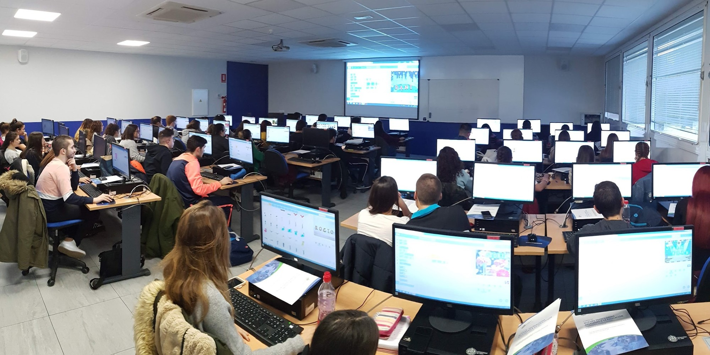
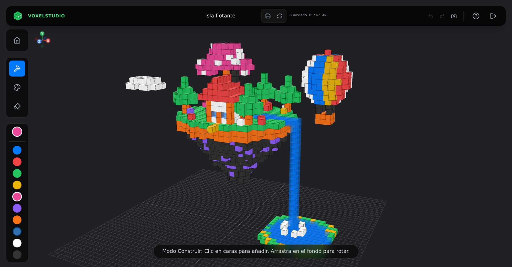
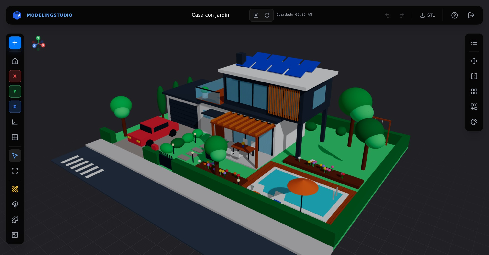
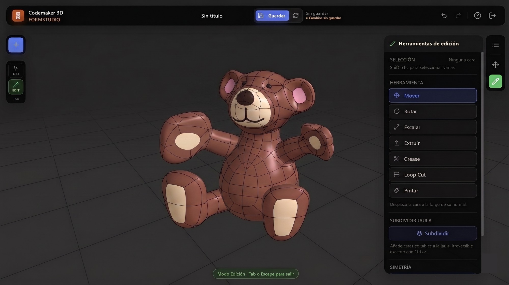
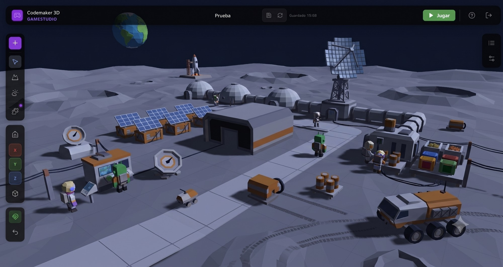
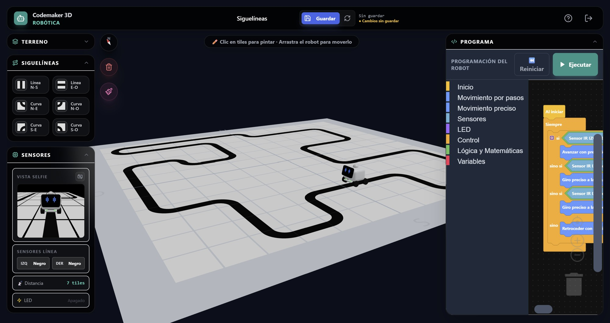
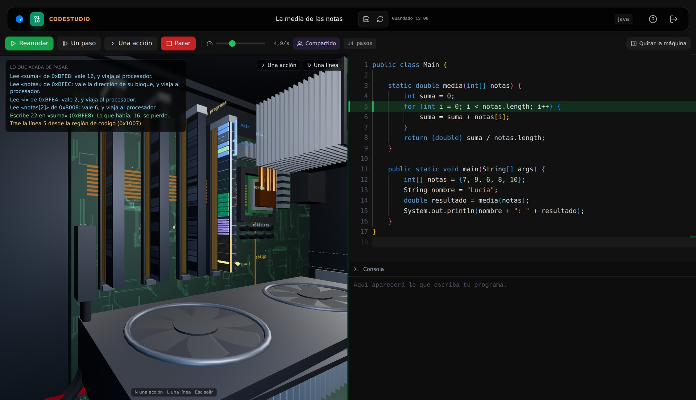

Hola, somos Codemaker 3D
Diseño 3D, programación y robótica para el aula.
@codemaker_3dcodemaker.es
VoxelStudioPrimaria

Construir por bloques, desde 8 años
La puerta de entrada al 3D para los más pequeños: mundos enteros colocando bloques.
@codemaker_3dcodemaker.es
ModelingStudioESO · Bachillerato

Piezas precisas y sus planos acotados
Combina figuras para construir piezas y saca sus planos en sistema europeo.
@codemaker_3dcodemaker.es
FormStudioTodas las etapas

Modelado orgánico, como plastilina
Personajes y formas redondeadas moldeando figuras simples.
@codemaker_3dcodemaker.es
GameStudioPrimaria · ESO

Videojuegos 3D con físicas reales
Monta el escenario, programa lo que ocurre y juégalo al momento.
@codemaker_3dcodemaker.es
RoboticStudioPrimaria · ESO

Un robot con sensores, sin robot físico
Monta sensores en un robot virtual y prográmalo por bloques. Sin comprar hardware.
@codemaker_3dcodemaker.es
CodeStudio PROESO · Bachillerato · FP

Java, con el ordenador abierto por dentro
Mira, paso a paso, cómo ejecuta tu programa un ordenador en 3D: memoria, procesador y bus.
@codemaker_3dcodemaker.es
Pruébalo gratis en codemaker.es
- Funciona en el navegador
- Sin instalar nada
- Pensado para el currículo español
- Plan BASIC gratuito
@codemaker_3dcodemaker.es